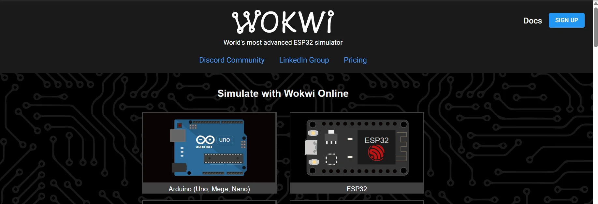
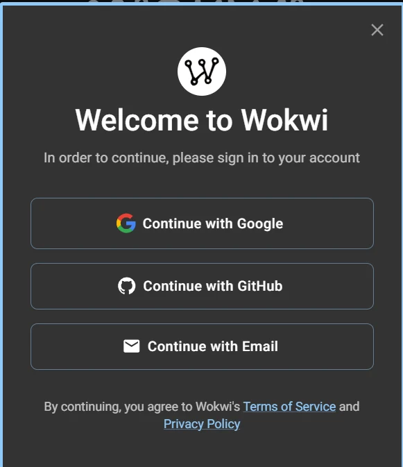
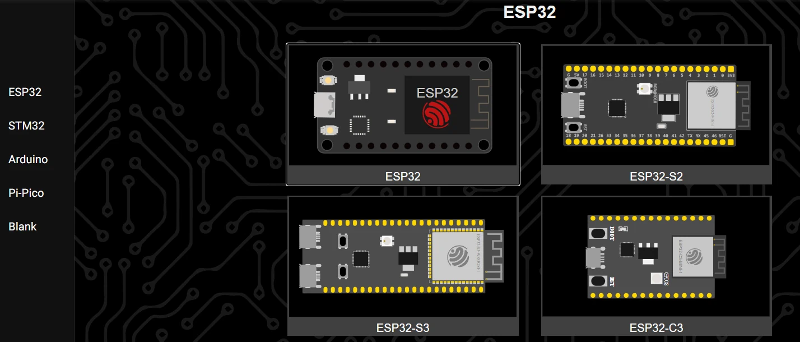
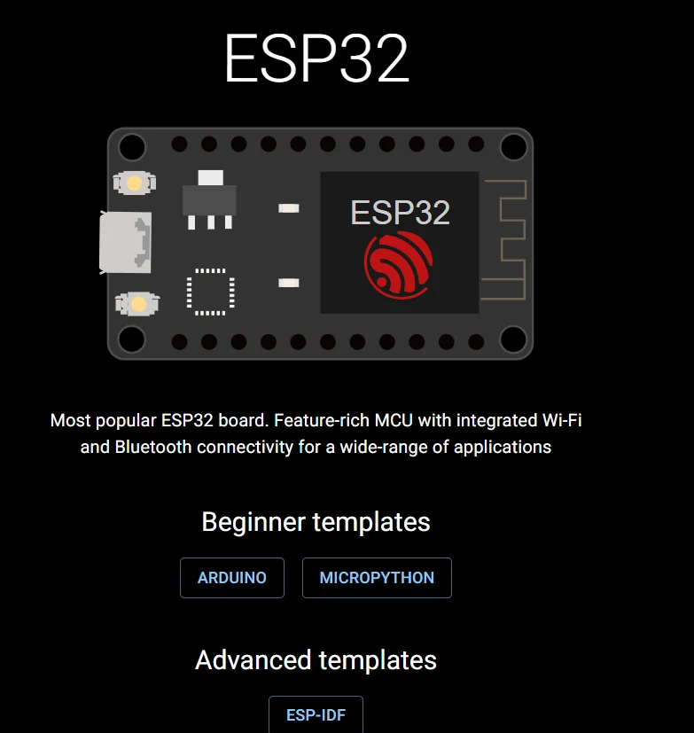
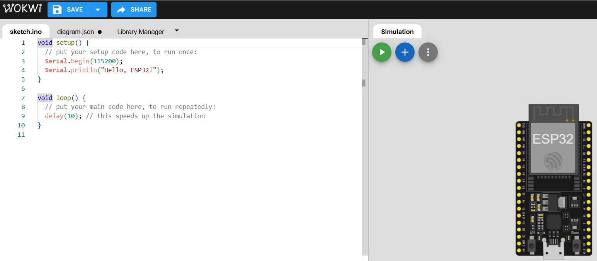

Conectividade: quando outro dispositivo entra na conversa
Até aqui, o sistema percebe o ambiente, calcula e controla componentes localmente. Agora surge uma nova necessidade: trocar informações com outros dispositivos. O mesmo projeto vai evoluir passo a passo, sem criar um circuito novo para cada tecnologia.
Controlar de perto
→
Entrar na rede
→
Conversar pela Web
→
Ser encontrado
→
Acessar de fora
Placa-baseESP32 DOIT DevKit com módulo ESP32-WROOM-32.
Circuito-baseUm LED externo com resistor permanece durante todo o bloco.
PercursoCada tecnologia aparece quando resolve uma nova necessidade do projeto.
Antes de praticar: o que cada ambiente consegue testar?
Use este quadro para não tentar reproduzir no simulador um recurso que ele não oferece.
Etapa
ESP32 física
Wokwi com gateway público
Circuito / Blink
✓ Teste completo
✓ Teste completo
Bluetooth
✓ Bluetooth Classic/SPP real com Android
△ O rádio Bluetooth não é simulado; testamos a lógica pelo Monitor Serial
Wi-Fi
✓ Teste completo em rede 2,4 GHz compatível
✓ Teste completo com Wokwi-GUEST
HTTP — cliente
✓ Faz requisição para outro servidor
✓ Conexões de saída funcionam no gateway público
HTTP — servidor
✓ Navegador controla o LED na mesma rede
△ Navegador só entra com Private IoT Gateway (recurso pago e opcional)
mDNS
✓ Pode ser testado na rede local; depende também do sistema e da rede
— Não é um teste confiável no gateway público
Tunelamento
✓ Teste completo com um computador na mesma rede
— Não é prática do Wokwi padrão
0
Conhecendo o ESP32 antes da conectividade
O Arduino Uno já nos ensinou a base. Agora vamos observar apenas o que muda ao trabalhar com o ESP32.
Por que começar por aqui? Até agora você já aprendeu a ler entradas e controlar saídas. O ESP32 entra neste momento porque queremos dar ao projeto a capacidade de se comunicar. Não vamos reaprender eletrônica do zero: vamos apenas entender o que muda na nova placa para usar seus recursos com segurança.
1. O que muda em relação ao Arduino Uno?
Arduino Uno
ESP32 DevKit
Lógica digital de 5 V
Lógica digital de 3,3 V
Sem Wi-Fi e Bluetooth integrados
Wi-Fi e Bluetooth integrados
Pinos mais simples de reconhecer no início
GPIOs com várias funções possíveis
Recursos mais enxutos
Mais recursos internos e possibilidades de comunicação
O que continua igual: ainda teremos entradas, saídas, pinMode(), digitalWrite(), sensores, atuadores e lógica de programação.
2. Entendendo os GPIOs
GPIO vem de General Purpose Input/Output, ou entrada/saída de uso geral. É o nome dado aos pinos do microcontrolador que podem receber ou enviar sinais.
Nomes como GPIO 23, GPIO 18 e GPIO 4 identificam esses sinais internos. O número do GPIO não indica a posição física do pino na placa; por isso, os números impressos ao lado dos conectores não aparecem necessariamente em sequência.
Além disso, um mesmo GPIO pode assumir funções diferentes, como entrada/saída digital, leitura analógica, PWM ou comunicação.
2A. Guia rápido dos pinos do ESP32 usados no curso
Antes de ligar qualquer fio, vamos reconhecer os nomes impressos ao lado dos conectores. Na placa física e no Wokwi, a posição pode variar conforme o modelo: procure sempre a identificação do pino, como 23, GPIO23 ou D23, em vez de contar posições.
Onde ficam no ESP32 do Wokwi? Com a entrada USB voltada para baixo, GPIO 23 e 22 aparecem perto do alto da fileira direita, GPIO 21 fica abaixo dos pinos TX0/RX0, e GPIO 34 está na parte superior da fileira esquerda. O 3V3 aparece no alto à esquerda, enquanto há mais de um GND. Na placa física, confira sempre os nomes impressos, pois a disposição pode mudar.
Pino na placa
O que faz e quando vamos utilizar
GPIO 23
Saída digital: envia o sinal para acender ou apagar o LED. Será usado no circuito-base do Módulo 6 e no projeto final.
GPIO 34
Entrada analógica (ADC1): lê o sinal do LDR no Módulo 10. É somente entrada, sem pull-up ou pull-down interno; não serve para acionar o LED como saída.
GPIO 21
Dados I2C (SDA): no Módulo 8, transporta os dados entre o ESP32 e o dispositivo I2C, como um LCD com interface compatível.
GPIO 22
Relógio I2C (SCL): no Módulo 8, fornece o sinal que sincroniza a comunicação I2C.
GPIO 32 e 33
Entradas ou saídas digitais e entradas analógicas (ADC1): são alternativas úteis para outros sensores e experiências; não precisamos conectá-los no primeiro circuito.
TX0 (GPIO 1) e RX0 (GPIO 3)
Comunicação serial: normalmente usados para gravação e mensagens de diagnóstico da placa. Utilizaremos o Monitor Serial sem precisar colocar fios neles.
3V3
Alimentação de 3,3 V: disponível para componentes compatíveis, respeitando os limites elétricos. Não é um GPIO.
GND
Referência elétrica comum: participa do retorno da corrente no circuito com LED e nas montagens com sensores. Pode haver vários pinos GND.
5V / VIN
Alimentação da placa: a identificação e o uso dependem do modelo. Nunca aplique 5 V diretamente a um GPIO do ESP32.
EN
Habilitar/reiniciar: está relacionado ao funcionamento e à reinicialização do chip; não é uma saída comum para o LED.
BOOT (GPIO 0)
Inicialização e gravação: o botão BOOT costuma atuar sobre o GPIO 0. Esse pino exige cuidado porque influencia a inicialização; não será usado no circuito-base.
Atenção aos pinos especiais: GPIO 34, 35, 36 e 39 são somente entradas; GPIO 6 a 11 normalmente estão ligados à memória flash. Alguns GPIOs, como 0, 2, 5, 12 e 15, influenciam a inicialização. Para as nossas primeiras montagens, siga os pinos especificados nas atividades.
Missão de reconhecimento: observe a placa no Wokwi e localize GPIO 23 e GND. Qual deles enviará o sinal para o LED e qual será a referência elétrica do circuito? No próximo passo, você os reconhecerá novamente na montagem.
3. Por que existem vários GND?
GND vem de ground (terra). É a referência elétrica comum do circuito e o caminho de retorno da corrente. Os vários pinos GND da placa pertencem ao mesmo terra elétrico e existem para facilitar as conexões durante a montagem.
Nas práticas deste bloco, escolha o GND que deixar o circuito mais simples e organizado.
4. 3,3 V × 5 V: a diferença que exige atenção
USB / 5V / VINA placa pode ser alimentada com 5 V pelo caminho previsto pelo fabricante. VIN indica a entrada de alimentação da placa.
3V3É a tensão lógica principal usada pelo ESP32.
GPIOsTrabalham com sinais de 3,3 V. Não aplique 5 V diretamente a um GPIO.
Atenção: um sensor alimentado com 5 V pode entregar um sinal de 5 V. Antes de ligar sua saída ao ESP32, confira se é necessária adaptação de nível.
5. Wi-Fi, Bluetooth e antena
Wi-Fi e Bluetooth já fazem parte do ESP32. Eles não ocupam um GPIO específico e não precisam de um módulo externo para funcionar.
No módulo ESP32-WROOM-32, a antena integrada fica em uma das extremidades do módulo e é responsável pela comunicação sem fio.
6. EN, BOOT e pinos especiais
EN (Enable): reinicia o ESP32.
BOOT: pode ser usado durante o processo de gravação em algumas situações.
Pinos especiais: alguns GPIOs participam da inicialização, memória ou outras funções internas.
Não é preciso decorar o pinout. Em cada prática indicaremos os GPIOs apropriados.
7. Reconhecendo a placa que vamos usar
Na placa, localize os nomes impressos ao lado dos pinos. Para começar, basta reconhecer GPIO 23, GND, 3V3, VIN/5V, EN e BOOT. Os demais aparecem quando forem necessários.
✓ GPIO é o número do sinal, não a posição física.✓ Vários GND facilitam a montagem.✓ A placa pode receber 5 V, mas os GPIOs trabalham em 3,3 V.✓ Wi-Fi e Bluetooth já estão integrados.✓ Alguns GPIOs possuem funções especiais.✓ Não precisamos memorizar todo o pinout.
Próximo passo
Agora que reconhecemos as diferenças essenciais do ESP32, vamos montar um LED no GPIO 23 e confirmar o funcionamento da placa antes de iniciar a comunicação sem fio.
Preparação
Do primeiro programa ao circuito-base
Comece pelo Hello, ESP32!; depois monte e teste o LED no Wokwi.
Uma conquista de cada vez. Primeiro criaremos um projeto ESP32 no Wokwi e veremos a mensagem Hello, ESP32! no Monitor Serial. Só depois acrescentaremos LED e resistor e executaremos um novo programa. Assim fica mais fácil descobrir onde está um eventual problema.
1. Nossa primeira missão
Vamos começar sem fios: fazer o ESP32 enviar Hello, ESP32! ao Monitor Serial. Depois será a vez de controlar um LED de verdade no circuito simulado.
2. O que vamos aprender
Entrar no Wokwi, criar um projeto com programação Arduino, executar o exemplo pronto e reconhecer o Monitor Serial. Em seguida, acrescentar componentes pelo botão +.
3. Nosso percurso
Primeira conquista: mensagem no Monitor Serial. Segunda conquista: LED piscando. Depois aproveitaremos esse mesmo circuito nas etapas de conectividade.
4. Criando seu primeiro projeto no Wokwi
Nossa escolha: nesta aula, vamos programar o ESP32 em linguagem Arduino (C/C++) dentro do Wokwi, diretamente no navegador. Você não precisa instalar a Arduino IDE nem conectar uma placa física para esta prática.
Vamos preparar nossa bancada virtual. Você pode executar a simulação sem entrar em uma conta. Para salvar o projeto e retomá-lo depois, identifique-se antes de criá-lo. Depois criaremos o projeto ESP32 e executaremos nosso primeiro programa.

1. Acesse o Wokwi
Entre em wokwi.com. Se quiser salvar o projeto e ainda não tiver uma conta, clique em Sign Up (Cadastrar-se), no canto superior direito. Se já possuir conta, use Sign In (Entrar), quando disponível. Caso já esteja conectado, avance para a escolha da placa.

2. Conclua a identificação
Se escolheu entrar e a tela Welcome to Wokwi apareceu, escolha Continue with Google, Continue with GitHub ou Continue with Email e siga as instruções na tela. Se você já estiver conectado e essa janela não aparecer, continue normalmente. Depois, na página do Wokwi, escolha a placa ESP32.

3. Escolha o ESP32 original
Na seleção de placas, escolha ESP32, e não ESP32-C3, ESP32-S2 ou ESP32-S3. Nesta sequência manteremos a placa baseada no ESP32 original, compatível também com a futura atividade de Bluetooth Classic/SPP.

4. Selecione o modelo Arduino
Em Beginner templates, clique em Arduino. Atenção: Arduino aqui é o ambiente de programação escolhido para o projeto Wokwi; não significa abrir a Arduino IDE instalada no computador.

5. Reconheça o que apareceu
À esquerda fica o sketch.ino, onde escreveremos o código. À direita fica a placa na área de simulação. O botão azul + adiciona componentes e o botão verde ▶ inicia a simulação. Não apague o código inicial ainda. Primeiro vamos executá-lo e observar a mensagem Hello, ESP32!.
Checkpoint 1: você encontrou a placa ESP32 e a aba sketch.ino? Agora vamos executar o exemplo, ainda sem acrescentar componentes.
5. Primeiro programa: Hello, ESP32!
No editor aberto, mantenha o código de exemplo em sketch.ino. O modelo inicial pode aparecer como ESP32 DevKit C V4; ele também usa o ESP32 original. Não é necessário substituir a placa apenas porque a aparência difere da imagem. Na DevKit v1, uma inscrição como D23 identifica o GPIO 23 usado pelo código.
Clique no botão verde ▶ para iniciar a simulação. Aguarde a compilação.
Abra o Monitor Serial na área de simulação, se ele não aparecer automaticamente.
Procure a mensagem Hello, ESP32!. Ela é escrita uma vez pelo setup(), com Serial.println().
Se não apareceu: confira se iniciou a simulação e se abriu o Monitor Serial. Este teste não precisa de LED nem de resistor.
Checkpoint 2: a mensagem apareceu? Você já executou seu primeiro programa no ESP32 simulado!
6. Uma nova missão para o ESP32
Até aqui, nosso programa mostrou uma mensagem na tela. Agora queremos observar uma ação fora do código: fazer um LED acender e apagar. Para isso, vamos montar um circuito na mesma placa que você acabou de testar.
7. Montando o circuito-base
Clique no botão azul + ao lado do botão de simulação para abrir os componentes. Procure LED e adicione-o; repita para resistor. Ajuste o resistor para 220 Ω e faça as ligações como na figura abaixo. Pare a simulação antes de editar a montagem.
GPIO 23liga-se ao ânodo do LED.
Cátodo do LEDliga-se ao resistor de 220 Ω.
Resistor 220 Ωliga-se ao GND do ESP32.
Montagemeste circuito será reutilizado nas próximas experiências de comunicação.
No sketch.ino, selecione o exemplo anterior, clique em Copiar no código acima, cole-o no editor e pressione o botão verde ▶ para iniciar a simulação.
O LED acende por um segundo e apaga por um segundo continuamente.
Checkpoint da preparação: na placa física e no Wokwi, o LED deve piscar no mesmo ritmo. Se isso acontecer, circuito, polaridade, resistor, GPIO 23 e programa-base estão prontos para as próximas etapas.
10. Erros comuns
Selecionar uma porta diferente da placa conectada.
Usar um cabo USB que serve apenas para alimentação.
Inverter ânodo e cátodo do LED.
Ligar o LED sem resistor.
Alternativa opcional — ESP32 físico com Arduino IDE
Esta etapa é opcional. Só a utilize se você for executar o experimento em uma placa ESP32 real, fora do Wokwi.
Instale e abra a Arduino IDE.
Pelo Gerenciador de Placas, instale esp32 by Espressif Systems, caso necessário.
Conecte a placa com um cabo USB de dados.
Selecione a placa compatível com seu ESP32 original e a porta serial correspondente.
Se a porta não aparecer: verifique cabo, conexão e driver USB-serial. Isso não se aplica à simulação do Wokwi.
Compatibilidade nas próximas aulas: para Bluetooth Classic/SPP com BluetoothSerial, utilize uma placa baseada no ESP32 original, como a ESP32-WROOM-32.
11. Próximo problema
O ESP32 já controla o LED. Mas ainda é o próprio programa que decide quando isso acontece. Como enviar uma ordem sem fio a partir de um dispositivo próximo?
6.1
Bluetooth: controlar um dispositivo próximo
O celular envia um comando, o ESP32 interpreta e o circuito reage.
Agora imagine uma situação simples: você está perto do equipamento e quer mandar uma ordem pelo celular, como ligar uma luz ou acionar um pequeno mecanismo. Nesse caso, criar uma rede ou depender da Internet seria exagero. Bluetooth é adequado justamente porque permite uma comunicação direta e próxima. Vamos usá-lo para transformar o celular em um controle do nosso LED.
1. Onde isso aparece?
Controles próximos, configurações de equipamentos, comandos enviados por um celular e comunicação entre dispositivos no mesmo ambiente são exemplos em que uma conexão direta pode ser suficiente. No nosso protótipo, o LED representa qualquer saída que precise obedecer a um comando recebido sem fio.
2. Como o Bluetooth será usado
Bluetooth permite comunicação sem fio a curta distância. Aqui usaremos Bluetooth Classic com SPP (Serial Port Profile, perfil de porta serial), que cria um canal parecido com uma comunicação serial.
Celular→Bluetooth Classic / SPP→ESP32→LED
O celular envia um caractere, o ESP32 lê esse caractere e decide o que fazer. Não é necessário roteador, endereço IP ou rede Wi-Fi para essa comunicação direta.
3. Circuito
Use o circuito da etapa Preparação — Circuito. Não há nova montagem: o LED e o resistor de 220 Ω continuam em série entre o GPIO 23 e o GND.
Comparação: em um Arduino Uno é comum acrescentar um HC-05 ou HC-06 para obter Bluetooth serial. No ESP32 utilizado aqui, o Bluetooth já está integrado.
#include "BluetoothSerial.h" disponibiliza a comunicação Bluetooth serial.
BluetoothSerial SerialBT; cria o objeto usado para enviar e receber dados.
SerialBT.begin("MBB-ESP32") inicia o Bluetooth com o nome que será procurado no celular.
SerialBT.available() verifica se há dado recebido e SerialBT.read() lê um caractere.
Compare com Serial.available() e Serial.read(): a lógica é parecida; muda a origem do dado.
6. Testando
Carregue o programa no ESP32.
Abra o Monitor Serial em 115200.
No celular Android, use um terminal compatível com Bluetooth Classic/SPP. Um exemplo é o aplicativo Serial Bluetooth Terminal, de Kai Morich; outro aplicativo equivalente também pode ser usado.
Localize e conecte-se a MBB-ESP32.
Envie L e observe o LED acender.
Envie D e observe o LED apagar.
7. Resultado esperado
O celular envia L ou D, o ESP32 executa a ação e devolve uma confirmação. Assim, a comunicação ocorre nos dois sentidos.
Checkpoint: na ESP32 física, o Android deve controlar o LED por Bluetooth real. No Wokwi, o mesmo comportamento lógico deve funcionar pelo Monitor Serial; isso não representa um rádio Bluetooth simulado.
8. Erros comuns
Problema
O que conferir
O código não compila com BluetoothSerial.h
Confirme que a placa selecionada é baseada no ESP32 original / ESP32-WROOM-32. Não use ESP32-C3, S2 ou S3 para reproduzir esta prática de Bluetooth Classic/SPP.
O nome MBB-ESP32 não aparece
Confirme se o programa foi carregado, se a placa é ESP32-WROOM-32 e se o Bluetooth do celular está ativo.
Conecta, mas o LED não responde
Envie apenas os caracteres L ou D e confira o GPIO 23.
O aplicativo não oferece terminal serial
Use um aplicativo compatível com Bluetooth Classic/SPP. BLE (Bluetooth Low Energy) usa outro modelo de comunicação.
Estou tentando pelo iPhone/iPad
Esta prática usa o perfil serial clássico SPP e foi planejada para Android. Para iOS/iPadOS, a alternativa didática adequada seria outra implementação, normalmente baseada em BLE.
9. Próximo problema
Bluetooth resolveu a comunicação próxima. Mas e se o ESP32 precisar fazer parte de uma rede, como um computador ou celular?
6.2
Wi-Fi: colocando o sistema em uma rede
O dispositivo deixa de depender apenas de uma conexão direta e passa a ter um endereço dentro da rede.
Bluetooth resolveu o controle de perto. E se quisermos ir além? Em uma casa, escola ou empresa, celulares e notebooks já participam de uma rede. Se o ESP32 entrar nessa mesma rede, ele pode ser encontrado por outros dispositivos e começar a oferecer serviços. É por isso que o próximo passo é o Wi-Fi: primeiro colocamos o ESP32 na rede e descobrimos qual endereço ele recebeu.
1. O que ganhamos ao entrar na rede?
O ESP32 deixa de conversar apenas com um dispositivo próximo e passa a participar da mesma infraestrutura usada por celulares e computadores. Isso prepara o caminho para páginas Web, APIs, envio de dados e outros serviços de rede que veremos a partir daqui.
2. Como a conexão Wi-Fi funciona
O ESP32 entrará na rede como uma estação, isto é, como mais um dispositivo conectado ao ponto de acesso ou roteador.
ESP32→ponto de acesso / roteador→endereço IP
SSID (Service Set Identifier) é o nome da rede Wi-Fi;
a senha autoriza a entrada na rede quando ela é protegida;
IP (Internet Protocol) é o endereço usado para identificar o ESP32 naquela rede.
Em uma rede comum, o roteador normalmente fornece esse endereço IP automaticamente quando o ESP32 se conecta.
Rede Wi-Fi não é sinônimo de Internet. Dois dispositivos podem se comunicar pela mesma rede local mesmo que ela não tenha acesso à Internet.
3. Circuito e rede para o teste
O circuito continua igual. O LED permanece no GPIO 23, mas nesta etapa ele não é o foco. O resultado observável será a conexão mostrada no Monitor Serial.
Se utilizar um ESP32 físico: escolha uma rede Wi-Fi de 2,4 GHz simples, sem página de login e sem autenticação corporativa. Redes escolares e redes de visitantes podem impor restrições adicionais. Não publique nem compartilhe o código depois de substituir SENHA_DA_REDE por uma senha real.
4. Escolha seu ambiente — um teste, dois caminhos
Nos dois casos, a missão é a mesma: conectar o ESP32 a uma rede Wi-Fi e encontrar o endereço IP no Monitor Serial. Escolha apenas um dos códigos abaixo, de acordo com o ambiente em que está trabalhando.
4A. Wokwi — sem placa físicaUse o programa para a rede virtual Wokwi-GUEST, sem senha. Execute no simulador e observe a confirmação e o IP no Monitor Serial.
4B. ESP32 físico — com placa realUse o programa da sua rede Wi-Fi de 2,4 GHz. Informe o nome (SSID) e a senha da rede de teste antes de enviar o código à placa.
Uma biblioteca, nos dois programas: a linha #include <WiFi.h> permite utilizar os comandos de conexão Wi-Fi do ESP32. Biblioteca é um conjunto de recursos prontos que o programa utiliza. No Arduino IDE, ela já acompanha o pacote de placas ESP32 instalado e selecionado corretamente; não é necessário instalar outra WiFi.h separadamente. O projeto ESP32 do Wokwi também oferece esse recurso.
Observe a sequência comum aos dois programas: iniciar o Monitor Serial → entrar na rede Wi-Fi → aguardar a conexão → mostrar o IP. A diferença está nos dados da rede: a placa física usa o nome e a senha informados; o Wokwi usa Wokwi-GUEST, sem senha.
Por que aparece um IP? É o endereço que identifica o ESP32 naquela rede e permitirá discutir os pedidos HTTP no próximo tópico. Receber um IP local não comprova acesso à Internet. Logo abaixo vamos compreender os comandos desse processo.
6. Testando — ESP32 físico
Substitua NOME_DA_REDE e SENHA_DA_REDE.
Carregue o programa.
Abra o Monitor Serial em 115200.
Aguarde a mensagem de conexão.
Anote o endereço IP mostrado.
7. Resultado esperado — ESP32 físico
Conectando ao Wi-Fi....
Wi-Fi conectado.
Endereco IP: 192.168.1.37
O endereço será diferente em cada rede.
8. Erros comuns
Problema
O que conferir
Fica somente nos pontos
Nome da rede, senha, sinal e compatibilidade com 2,4 GHz.
Rede da escola aparece, mas não conecta
Ela pode usar página de login, WPA2/WPA3-Enterprise ou outra política que este exemplo simples não trata. Para o primeiro teste, use uma rede 2,4 GHz simples ou um hotspot de teste.
Monitor Serial mostra caracteres ilegíveis
Configure o Monitor Serial para 115200.
Wokwi não mostra a conexão
Confirme que selecionou o código 4A, criou um projeto ESP32 e iniciou a simulação. Verifique a rede Wokwi-GUEST e o Monitor Serial.
4A. Wi-Fi no Wokwi
Vamos começar pelo simulador, com a rede Wokwi-GUEST, e observar a confirmação no Monitor Serial.
9. Conferência da etapa
ESP32 física: o Monitor Serial deve mostrar “Wi-Fi conectado” e um IP da rede usada. Wokwi: o Monitor Serial deve mostrar a conexão ao Wokwi-GUEST e, no gateway público, normalmente o IP 10.10.0.2.
Se chegou até aqui: o ESP32 já participa de uma rede. Agora falta escolher como ele vai trocar informações com outros dispositivos.
10. Próximo problema
Conseguimos colocar o ESP32 na rede e identificá-lo por um endereço IP. Isso é necessário, mas ainda não entrega nenhuma interface ao usuário. Agora precisamos escolher uma forma de conversa que o navegador já entenda. É aí que entra o HTTP.
6.3
HTTP: pedidos e respostas na Web
HTTP significa Hypertext Transfer Protocol. É um protocolo de aplicação usado para organizar pedidos e respostas entre clientes e servidores.
O ESP32 já entrou no Wi-Fi. Como trocar informações agora? Começaremos no Wokwi: o ESP32 enviará um pedido HTTP e receberá uma resposta. Depois, com uma placa física, faremos o caminho inverso: o navegador pedirá uma página ao ESP32 para controlar o LED. Assim descobriremos, na prática, os papéis de cliente e servidor.
1. O que vamos construir agora?
Primeiro, no Wokwi, o ESP32 consultará um servidor e mostrará a resposta no Monitor Serial. Depois, com uma placa física, criaremos uma página para controlar o LED. É a mesma comunicação HTTP vista de dois lados: o ESP32 pode tanto oferecer um serviço quanto consumir um serviço de outro sistema.
2. Cliente e servidor são papéis
O cliente inicia um pedido (request). O servidor recebe esse pedido e devolve uma resposta (response). O papel depende da situação:
Situação
Cliente
Servidor
ESP32 consulta uma página na Web
ESP32
Servidor Web
Celular abre a página do ESP32
Celular
ESP32
Importante: HTTP não exige que a comunicação atravesse a Internet. Ele também pode funcionar somente dentro da rede local, como no servidor criado pelo ESP32.
Parte A — ESP32 como cliente HTTP (comece pelo Wokwi)
Depois do Wi-Fi, começamos por um pedido que funciona no Wokwi padrão. Em muitos projetos IoT, o dispositivo não fica esperando alguém abrir sua página: ele próprio envia ou busca informações em um serviço externo. Para perceber essa mudança de papel, agora o ESP32 fará o pedido.
ESP32→ requisição GET →Servidor Web→ resposta →ESP32
Faça agora: copie este código para o sketch.ino do ESP32 no Wokwi, execute a simulação e abra o Monitor Serial.
Observe: o ESP32 usa a rede Wokwi-GUEST, envia uma requisição GET e mostra o código HTTP e a resposta recebida. A rede virtual não precisa da senha de casa ou da escola.
http.begin() informa a URL (endereço do recurso) que será consultada.
http.GET() envia um pedido do tipo GET, usado para solicitar um recurso.
O valor retornado por GET() permite observar o código de resposta HTTP; 200, por exemplo, indica uma resposta bem-sucedida.
http.getString() lê o conteúdo recebido e http.end() libera os recursos usados pela conexão.
5. Testando o cliente — escolha um ambiente
Use o código 3A no Wokwi ou o 3B na placa física, com a rede correspondente.
Execute a simulação ou carregue o programa na placa.
Abra o Monitor Serial em 115200.
Observe o retorno de GET() e, quando disponível, o texto recebido. Um código negativo indica falha da biblioteca; uma resposta HTTP positiva não significa necessariamente sucesso.
No Wokwi padrão, este teste também é possível: o pedido parte do ESP32 simulado para a Internet. O endereço example.com é usado apenas como destino simples; a resposta pode variar com o serviço, portanto o objetivo é verificar se houve um código HTTP positivo e conteúdo recebido.
Checkpoint HTTP: a Parte A (cliente) permite observar o retorno de uma requisição, inclusive no Wokwi padrão. A Parte B (servidor) permite controlar o LED pelo navegador com uma placa física na rede local; no Wokwi exige Private IoT Gateway opcional para acesso de entrada. Registre somente os testes que realmente executou.
Parte B — ESP32 como servidor HTTP (ESP32 físico)
Problema: já vimos o ESP32 fazer um pedido HTTP. Agora queremos abrir uma página no navegador e tocar em links para controlar o mesmo LED.
#include <WiFi.h>
#include <WebServer.h>
const char* ssid = "NOME_DA_REDE";
const char* senha = "SENHA_DA_REDE";
const int LED = 23;
WebServer servidor(80);
String criarPagina() {
String estado;
if (digitalRead(LED) == HIGH) {
estado = "LIGADO";
} else {
estado = "DESLIGADO";
}
String pagina = "<!DOCTYPE html>";
pagina += "<html><head><meta charset='UTF-8'>";
pagina += "<meta name='viewport' content='width=device-width, initial-scale=1'>";
pagina += "<title>Ambiente MbB</title></head><body>";
pagina += "<h1>Ambiente MbB</h1>";
pagina += "<p>Estado do LED: <strong>";
pagina += estado;
pagina += "</strong></p>";
pagina += "<p><a href='/ligar'>Ligar LED</a></p>";
pagina += "<p><a href='/desligar'>Desligar LED</a></p>";
pagina += "</body></html>";
return pagina;
}
void mostrarPagina() {
servidor.send(200, "text/html", criarPagina());
}
void ligarLED() {
digitalWrite(LED, HIGH);
mostrarPagina();
}
void desligarLED() {
digitalWrite(LED, LOW);
mostrarPagina();
}
void setup() {
Serial.begin(115200);
pinMode(LED, OUTPUT);
digitalWrite(LED, LOW);
WiFi.mode(WIFI_STA);
WiFi.begin(ssid, senha);
Serial.print("Conectando");
while (WiFi.status() != WL_CONNECTED) {
delay(500);
Serial.print(".");
}
Serial.println();
Serial.print("Abra no navegador: http://");
Serial.println(WiFi.localIP());
servidor.on("/", mostrarPagina);
servidor.on("/ligar", ligarLED);
servidor.on("/desligar", desligarLED);
servidor.begin();
Serial.println("Servidor HTTP iniciado.");
}
void loop() {
servidor.handleClient();
}
7. Como o servidor funciona
WebServer servidor(80) cria o servidor HTTP na porta 80, porta padrão usada por HTTP sem criptografia.
servidor.on("/", ...), servidor.on("/ligar", ...) e servidor.on("/desligar", ...) associam caminhos do endereço a funções do programa.
Quando o navegador pede /ligar, a função correspondente acende o LED e devolve a página atualizada.
servidor.send(200, "text/html", ...) envia a resposta: 200 indica sucesso e text/html informa que o conteúdo é uma página HTML.
servidor.handleClient() verifica continuamente se chegaram novos pedidos.
8. Testando o servidor — ESP32 físico
Use celular e ESP32 na mesma rede.
Carregue o programa e copie o IP mostrado.
No navegador, abra http://IP_DO_ESP32.
Use os links para ligar e desligar o LED.
9. Resultado esperado — servidor HTTP
A página mostra o estado do LED. Ao tocar em Ligar LED ou Desligar LED, o navegador faz um pedido ao ESP32, que executa a ação e devolve uma nova página.
10. Erros comuns
Problema
O que conferir
A página do ESP32 não abre
Celular/computador e ESP32 devem estar na mesma rede e o endereço deve usar o IP mostrado no Monitor Serial. Redes de escola, empresa ou “guest” podem isolar os clientes e impedir que um dispositivo acesse o outro; nesse caso, teste em uma rede simples que permita comunicação local.
O servidor abre, mas o LED não muda
Confira o GPIO 23 e se os caminhos /ligar e /desligar estão corretos.
A requisição do cliente retorna erro
Confirme se o Wi-Fi está conectado, se há acesso à Internet e se o servidor consultado responde. Um retorno negativo de http.GET() indica erro na operação; respostas HTTP como 404 são respostas válidas, mas não representam o recurso encontrado.
11. Próximo problema
Já fizemos pedidos HTTP no Wokwi e conhecemos o servidor que controla o LED na placa física. Para encontrar esse servidor, ainda dependemos de um número que pode mudar: o endereço IP. O próximo passo não é criar outro servidor; é tornar o servidor que já existe mais fácil de encontrar.
6.4
mDNS: um nome para encontrar o Ambiente MbB
Vamos investigar anúncios reais na captura do Wokwi e separar anúncio de resolução de nomes.
Em 6.3, o ESP32 fez pedidos HTTP; com a placa física, também atendemos ao navegador. Agora imagine que o IP do servidor mude: precisamos encontrá-lo novamente. Queremos usar ambiente-mbb.local sem decorar números.
1. Quem sabe o endereço desse nome?
mDNS significa Multicast DNS: dispositivos compatíveis perguntam e respondem na própria rede, sem um servidor DNS central. No IPv4, as mensagens usam o endereço multicast 224.0.0.251 e a porta UDP 5353. Multicast é o envio a um grupo de participantes; a porta identifica o serviço de comunicação.
O ESP32 pode anunciar seu nome e seu serviço HTTP. Isso não cria outro servidor HTTP. Depois de descobrir o IP, o cliente ainda faz a requisição HTTP habitual. O sufixo .local vale na rede local e não publica o dispositivo na Internet.
Nossa bancada gratuita: manteremos ESP32, LED no GPIO 23 e resistor de 220 Ω. No Wokwi, executaremos o servidor e examinaremos seus pacotes. O gateway público não dá ao navegador do computador uma entrada para esse servidor; abrir ambiente-mbb.local não será o teste obrigatório.
2. As linhas novas
Linha
O que acrescenta
#include <ESPmDNS.h>
Disponibiliza a biblioteca mDNS, já incluída no ambiente Arduino para ESP32 do Wokwi.
MDNS.begin("ambiente-mbb")
Tenta iniciar o nome-base, sem escrever .local no argumento. Retorna verdadeiro se a inicialização foi aceita; isso não prova uma consulta de outro aparelho.
if (!MDNS.begin(...))
! inverte o resultado: entramos no primeiro bloco quando a inicialização falha.
MDNS.addService("http", "tcp", 80)
Configura o anúncio do serviço HTTP sobre TCP na porta 80. TCP é o protocolo de transporte usado aqui pelo HTTP; o anúncio mDNS em si usa UDP.
O restante retoma o servidor da etapa anterior. Na versão abaixo, condição ? valor1 : valor2 escolhe o texto LIGADO ou DESLIGADO conforme a leitura do GPIO; equivale ao if/else já utilizado. O terceiro argumento de WiFi.begin(ssid, senha, 6) informa o canal da rede virtual, agilizando a conexão no Wokwi.
3. Programa completo — Wokwi gratuito
No projeto ESP32 da preparação, preserve a montagem e substitua somente o conteúdo de sketch.ino.
#include <WiFi.h>
#include <WebServer.h>
#include <ESPmDNS.h>
const char* ssid = "Wokwi-GUEST";
const char* senha = "";
const int LED = 23;
WebServer servidor(80);
String criarPagina() {
String estado = digitalRead(LED) == HIGH ? "LIGADO" : "DESLIGADO";
String pagina = "<!DOCTYPE html><html><head><meta charset='UTF-8'>";
pagina += "<title>Ambiente MbB</title></head><body>";
pagina += "<h1>Ambiente MbB</h1><p>LED: " + estado + "</p>";
pagina += "<p><a href='/ligar'>Ligar LED</a></p>";
pagina += "<p><a href='/desligar'>Desligar LED</a></p></body></html>";
return pagina;
}
void mostrarPagina() {
servidor.send(200, "text/html", criarPagina());
}
void ligarLED() {
digitalWrite(LED, HIGH);
mostrarPagina();
}
void desligarLED() {
digitalWrite(LED, LOW);
mostrarPagina();
}
void setup() {
Serial.begin(115200);
pinMode(LED, OUTPUT);
digitalWrite(LED, LOW);
WiFi.mode(WIFI_STA);
WiFi.begin(ssid, senha, 6);
Serial.print("Conectando");
while (WiFi.status() != WL_CONNECTED) {
delay(500);
Serial.print(".");
}
Serial.println();
Serial.print("IP virtual: ");
Serial.println(WiFi.localIP());
if (!MDNS.begin("ambiente-mbb")) {
Serial.println("Falha ao iniciar mDNS.");
} else {
MDNS.addService("http", "tcp", 80);
Serial.println("Inicializacao mDNS aceita; servico HTTP configurado.");
Serial.println("Isso nao comprova resolucao do nome por outro dispositivo.");
Serial.println("Exporte o PCAP para investigar os pacotes mDNS.");
}
servidor.on("/", mostrarPagina);
servidor.on("/ligar", ligarLED);
servidor.on("/desligar", desligarLED);
servidor.begin();
}
void loop() {
servidor.handleClient();
delay(10);
}
4. Execute e recolha a evidência
Abra seu projeto no Wokwi, com o circuito-base. Não instale bibliotecas extras nem informe a senha real da sua rede.
Cole o programa, inicie a simulação e acompanhe o Monitor Serial em 115200. Procure o IP virtual e a mensagem Inicializacao mDNS aceita; servico HTTP configurado.
Aguarde pelo menos 10 segundos no relógio da simulação, contado desde o início. Com o simulador lento, isso demora mais no relógio do computador.
Enquanto o Wi-Fi estiver conectado, clique no ícone de Wi-Fi da área de simulação e escolha Download PCAP file (baixar arquivo PCAP). PCAP é um arquivo de captura de pacotes, não uma imagem.
Selecione o arquivo baixado no leitor abaixo. Procure ambiente-mbb.local, o IP virtual e o serviço na porta 80.
Se aparecer erro de gateway: pare e reinicie a simulação. Só exporte após reconectar e esperar novamente. Uma mensagem antiga no Serial não prova que a rede permaneceu conectada.
5. Abra sua captura, sem instalar um analisador
A leitura acontece neste navegador; o arquivo não é enviado ao site. Limite: 5 MB. O leitor aceita PCAP clássico Ethernet ou Wi-Fi 802.11 e examina mDNS em IPv4/UDP; PCAPNG e outros formatos exigem um analisador próprio.
Selecione sua captura para ver os registros que ela realmente contém.
Como interpretar os registros
A relaciona um nome a um IPv4. SRV informa o computador e a porta do serviço. PTR ajuda a descobrir a instância do serviço. _http._tcp.local identifica o tipo de serviço HTTP sobre TCP. Essa descoberta de serviços é chamada DNS-SD.
Uma sondagem é uma pergunta enviada pelo próprio dispositivo antes de assumir o nome, para verificar conflitos. Não a confunda com uma consulta feita por um segundo aparelho. Um anúncio publica registros sem depender dessa consulta externa.
Na captura da validação desta aula foram observados seis pacotes mDNS: três sondagens e três anúncios. A quantidade da sua captura pode variar. Se não aparecer nenhum, verifique o código, espere mais tempo de simulação e exporte novamente. Uma captura vazia não comprova que o protocolo nunca funciona.
6. O que conseguimos comprovar?
Evidência
Conclusão possível
Mensagem no Serial
A execução passou pela inicialização. Ainda não vimos um pacote nem outro cliente.
Captura com anúncios A e SRV
A pilha simulada emitiu mensagens mDNS com nome, IP e serviço. Isso foi observado no Wokwi gratuito.
Outro processo consulta e recebe a resposta
Há descoberta/resolução real entre participantes. A atividade opcional no computador permite verificar isso.
Navegador abre o nome .local
Além da resolução pelo sistema do cliente, o servidor HTTP foi alcançado. Isso depende do dispositivo e da rede; não foi comprovado no Wokwi público.
Checkpoint sem placa: anote o nome, o IP e a porta encontrados na sua captura. Depois pare a simulação, troque apenas "ambiente-mbb" por "ambiente-sala" em MDNS.begin(), execute e exporte outra captura. O que mudou nos registros A e SRV? Por que nenhum desses anúncios, sozinho, prova que seu navegador resolve o nome?
7. Consulta mDNS real no computador — opcional
Quero experimentar pergunta e resposta sem ESP32 físico
Usaremos dois processos Python: um anuncia e outro consulta por mDNS na interface local do mesmo computador. São mensagens de rede reais, sem ESP32 e sem acessar o Wokwi. Não é uma comprovação da resolução .local nativa do navegador nem de comunicação entre dois computadores da rede.
Baixar os programas completos da bancada. Extraia o ZIP em uma pasta. É preciso Python 3, gratuito; veja a preparação na etapa 6.5. No Windows, abra o PowerShell nessa pasta: na barra de endereço do Explorador, digite powershell e pressione Enter.
Primeiro, crie um ambiente separado e instale zeroconf, a biblioteca que implementa mDNS/DNS-SD. Execute uma linha por vez:
-m venv .venv cria o ambiente na pasta .venv; -m pip install instala a biblioteca nesse ambiente. Não é necessário ativá-lo nem alterar a política do PowerShell. Abra três terminais nessa mesma pasta:
Terminal
Comando e resultado
1 — página
.\.venv\Scripts\python.exe servidor.py Abra http://127.0.0.1:8000/; verá o aviso fictício Ambiente MbB.
.\.venv\Scripts\python.exe mdns_local.py consultar Deve mostrar nome ambiente-mbb.local., endereço 127.0.0.1, porta 8000 e a URL descoberta.
Abra a URL que a consulta devolveu. Depois pressione Ctrl+Csomente no terminal 2, aguarde alguns segundos e execute uma nova consulta no terminal 3: deverá aparecer Nenhuma resposta em 5 segundos. O servidor HTTP no terminal 1 continua funcionando pelo IP. Assim você separa descobrir o serviço de atendê-lo.
Linux/macOS: use python3 -m venv .venv e substitua .\.venv\Scripts\python.exe por ./.venv/bin/python nos demais comandos. Em algumas distribuições, o componente venv precisa ser disponibilizado pelo responsável do computador.
Se a consulta falhar: confira a instalação no mesmo ambiente, o anúncio ativo e a ausência de outra instância com o mesmo nome. Bloqueios de multicast/UDP 5353 ou da interface local podem impedir a atividade. Não desative proteções da máquina; registre a limitação e conclua a investigação do PCAP.
Esta consulta e o teste de ausência de resposta foram executados em Linux. Os comandos do Windows seguem a sintaxe do Python/PowerShell, mas não foram executados nativamente no Windows nesta validação.
8. Com ESP32 físico — prática adicional
Programa completo e teste na rede local
Use o mesmo LED no GPIO 23. No código abaixo, substitua NOME_DA_REDE e SENHA_DA_REDE; não compartilhe o arquivo com a senha real. Grave pela Arduino IDE com o pacote ESP32 da Espressif. As três bibliotecas já fazem parte desse pacote.
#include <WiFi.h>
#include <WebServer.h>
#include <ESPmDNS.h>
const char* ssid = "NOME_DA_REDE";
const char* senha = "SENHA_DA_REDE";
const int LED = 23;
WebServer servidor(80);
String criarPagina() {
String estado;
if (digitalRead(LED) == HIGH) {
estado = "LIGADO";
} else {
estado = "DESLIGADO";
}
String pagina = "<!DOCTYPE html>";
pagina += "<html><head><meta charset='UTF-8'>";
pagina += "<meta name='viewport' content='width=device-width, initial-scale=1'>";
pagina += "<title>Ambiente MbB</title></head><body>";
pagina += "<h1>Ambiente MbB</h1>";
pagina += "<p>Estado do LED: <strong>";
pagina += estado;
pagina += "</strong></p>";
pagina += "<p><a href='/ligar'>Ligar LED</a></p>";
pagina += "<p><a href='/desligar'>Desligar LED</a></p>";
pagina += "</body></html>";
return pagina;
}
void mostrarPagina() {
servidor.send(200, "text/html", criarPagina());
}
void ligarLED() {
digitalWrite(LED, HIGH);
mostrarPagina();
}
void desligarLED() {
digitalWrite(LED, LOW);
mostrarPagina();
}
void setup() {
Serial.begin(115200);
pinMode(LED, OUTPUT);
digitalWrite(LED, LOW);
WiFi.mode(WIFI_STA);
WiFi.begin(ssid, senha);
Serial.print("Conectando");
while (WiFi.status() != WL_CONNECTED) {
delay(500);
Serial.print(".");
}
Serial.println();
Serial.println("Wi-Fi conectado.");
Serial.print("IP local: ");
Serial.println(WiFi.localIP());
if (!MDNS.begin("ambiente-mbb")) {
Serial.println("Falha ao iniciar mDNS.");
} else {
MDNS.addService("http", "tcp", 80);
Serial.println("Inicializacao mDNS aceita; teste o nome em outro aparelho.");
Serial.println("Abra: http://ambiente-mbb.local");
}
servidor.on("/", mostrarPagina);
servidor.on("/ligar", ligarLED);
servidor.on("/desligar", desligarLED);
servidor.begin();
}
void loop() {
servidor.handleClient();
}
Abra o Monitor Serial em 115200 e anote o IP.
No computador ou celular da mesma rede, confirme primeiro http://IP_DO_ESP32, substituindo o marcador pelo número mostrado.
Abra http://ambiente-mbb.local/ num dispositivo com suporte a mDNS. Se abrir, compare com o acesso pelo IP e teste o LED.
Se o IP abrir e o nome falhar, investigue suporte mDNS do cliente, nomes duplicados e isolamento entre participantes da rede. Se nenhum abrir, confira Wi-Fi, IP e servidor HTTP. Não exponha essas rotas de controle sem autenticação por um túnel.
Checkpoint com placa: explique quais evidências você coletou: inicialização, anúncios, resolução pelo cliente e acesso HTTP. O código da placa não substitui essas verificações.
9. O nome ainda tem uma fronteira
Encontrar um nome local não torna o serviço público. Na próxima etapa, vamos criar e interromper um caminho temporário até um servidor do computador, sem depender de placa ou gateway pago.
Não encontramos uma forma gratuita documentada e comprovada de fazer consultas mDNS entre ESP32 simulados em projetos Wokwi separados. A captura evidencia a emissão pelo simulador; a consulta Python evidencia outro experimento, no computador.
6.5
Tunelamento: abrir e fechar um caminho temporário
Sem ESP32 físico: um servidor no computador, um aviso fictício e uma verificação de acesso externo.
O IP privado e o nome .local não bastam para alguém de outra rede alcançar nosso serviço. Vamos demonstrar um túnel reverso: o computador inicia uma conexão de saída com um intermediário, que encaminha pedidos externos de volta ao serviço local.
1. Escolha a bancada que você consegue executar
Wokwi gratuito: o gateway público permite conexões de saída TCP/UDP, mas não conexões de entrada ao servidor simulado. Um GET enviado pelo ESP32 a um site externo continua sendo uma consulta de cliente; não é um túnel até o ESP32. Não use 10.10.0.2 como destino no computador.
O Private IoT Gateway do Wokwi é um recurso pago, com acesso de entrada/encaminhamento de portas e acesso à rede local. Ele não faz parte desta atividade. Aqui, o servidor será o computador: demonstramos tunelamento real, sem afirmar que estamos controlando uma placa.
O que publicar: somente o aviso fictício fornecido abaixo. Ele não lista pastas, não entrega arquivos do computador e não possui comandos de dispositivos. A URL será pública para quem a obtiver. HTTPS protege o transporte, mas não identifica nem autoriza o visitante. Não aponte o túnel para o servidor do LED da etapa 6.3.
2. Prepare a pasta de trabalho
Use um computador em que o teste seja autorizado. Baixe os programas da bancada e extraia o ZIP. Os arquivos servidor.py e encaminhador_local.py serão usados aqui; mdns_local.py pertence à experiência opcional anterior.
É preciso Python 3. No Windows, abra o PowerShell na pasta extraída: digite powershell na barra de endereço do Explorador e pressione Enter. Execute py --version. Se não existir, obtenha o instalador gratuito em python.org, seguindo a política do computador, e reabra o terminal. Não é necessário instalar bibliotecas Python para esta etapa.
Para o túnel externo, baixe o executável oficial cloudflared para Windows x64 e coloque-o nessa mesma pasta, mantendo o nome cloudflared-windows-amd64.exe. Quick Tunnels é a modalidade gratuita: não requer conta nem cartão. O programa é executado no terminal, sem instalar um serviço permanente.
Se Python já estiver disponível apenas como python, use esse nome no lugar de py. Em Linux/macOS, verifique com python3 --version e use python3 nos comandos. Para o cloudflared, obtenha a versão da sua arquitetura pela página oficial de downloads. No Linux, marque o binário como executável com chmod +x cloudflared-linux-amd64; no macOS, extraia o arquivo baixado. Execute o binário correspondente como ./cloudflared-linux-amd64 ou ./cloudflared em vez do comando Windows.
Sem permissão para baixar/executar a ferramenta ou com rede bloqueada? Faça os passos do servidor local e a alternativa de encaminhamento local no item 7. Não altere firewall, roteador, proteções ou regras da escola para viabilizar o teste.
3. Servidor completo — no computador
O ZIP já contém este código em servidor.py. Se preferir digitá-lo, salve como texto UTF-8 com esse nome, sem acrescentar .txt.
"""Aviso fictício e somente leitura. Não publica arquivos do computador."""
from http.server import BaseHTTPRequestHandler, ThreadingHTTPServer
PAGINA = """<!doctype html>
<html lang="pt-BR"><meta charset="utf-8">
<meta name="viewport" content="width=device-width,initial-scale=1">
<title>Ambiente MbB — aviso de teste</title>
<style>body{font-family:Arial;max-width:650px;margin:3rem auto;padding:1rem;
background:#eef8fa;color:#134956}article{background:white;padding:2rem;border-radius:1rem}</style>
<article><h1>Ambiente MbB</h1><p>Mensagem fictícia: bancada disponível para estudo.</p>
<p>Este servidor está no computador. Ele não controla um ESP32.</p></article></html>""".encode("utf-8")
class PaginaDeTeste(BaseHTTPRequestHandler):
def do_GET(self):
if self.path != "/":
self.send_error(404, "Caminho inexistente")
return
self.send_response(200)
self.send_header("Content-Type", "text/html; charset=utf-8")
self.send_header("Content-Length", str(len(PAGINA)))
self.send_header("Cache-Control", "no-store")
self.end_headers()
self.wfile.write(PAGINA)
print("Pedido GET / atendido.", flush=True)
def log_message(self, formato, *valores):
pass # Não registra IPs nem cabeçalhos dos visitantes.
if __name__ == "__main__":
servidor = ThreadingHTTPServer(("127.0.0.1", 8000), PaginaDeTeste)
print("Abra http://127.0.0.1:8000/ neste computador. Ctrl+C encerra.", flush=True)
try:
servidor.serve_forever()
except KeyboardInterrupt:
print("Servidor encerrado.")
finally:
servidor.server_close()
Entenda o servidor antes de executá-lo
http.server é a biblioteca HTTP do próprio Python. BaseHTTPRequestHandler permite definir a resposta e ThreadingHTTPServer atende pedidos. PAGINA guarda apenas o aviso fictício, convertido para bytes UTF-8 por .encode().
do_GET() atende a leitura da página; só o caminho / recebe status 200. Outros caminhos recebem 404. Não usamos o servidor que publica automaticamente uma pasta. Content-Type informa HTML/UTF-8, Content-Length informa o tamanho e Cache-Control: no-store pede que a resposta não seja armazenada.
127.0.0.1 é a interface local do computador, também conhecida como loopback; 8000 é a porta escolhida. serve_forever() aguarda pedidos até Ctrl+C; finally garante o fechamento da porta. O programa não é um servidor de produção.
4. Primeiro, faça funcionar localmente
No terminal 1, dentro da pasta extraída, execute:
py servidor.py
Deixe esse terminal aberto. No navegador desse computador, acesse http://127.0.0.1:8000/. Deve aparecer Ambiente MbB e Mensagem fictícia: bancada disponível para estudo. Cada acesso à página gera Pedido GET / atendido. no terminal.
Checkpoint local: a página abriu? Se não, resolva essa etapa antes de criar o túnel. No celular, localhost ou 127.0.0.1 aponta para o próprio celular, não para este computador.
5. Crie o caminho externo
Abra um terminal 2 na mesma pasta. Confira o cliente com .\cloudflared-windows-amd64.exe --version; depois execute:
.\ significa “nesta pasta” no PowerShell; tunnel inicia o cliente; --url indica o serviço local que receberá os pedidos. --protocol http2 escolhe HTTP/2 para a conexão do cliente com a Cloudflare. Isso não transforma o servidor local em HTTPS.
O cliente deve fornecer uma URL HTTPS aleatória terminada em .trycloudflare.com. Aguarde a indicação de conexão estabelecida; receber a URL, sozinho, não comprova o acesso. Copie a URL real exibida, não o endereço de outro aluno. Mantenha os dois terminais abertos.
No navegador, abra essa URL: deve aparecer o mesmo aviso. Se estiver autorizado e tiver outra rede disponível, use um celular com Wi-Fi desligado e dados móveis para repetir o acesso. Isso acrescenta uma verificação independente do computador. Não é necessário contratar dados móveis para concluir a bancada.
Navegador externo→ HTTPS →Cloudflare→ conexão do cloudflared →Computador: porta 8000
O computador iniciou a conexão com o intermediário; as requisições externas percorrem esse caminho e chegam ao Python. O ESP32 e o nome .local não participam deste experimento.
6. Feche o caminho e comprove a diferença
No terminal 2, pressione Ctrl+C e aguarde o cliente encerrar.
Abra a URL pública novamente, em uma nova aba privada ou atualizando a página. Ela deve deixar de entregar o aviso; a mensagem de erro e o tempo de atualização podem variar conforme o serviço. Uma aba já desenhada na tela não é uma nova requisição.
No computador, recarregue http://127.0.0.1:8000/: deve continuar funcionando, pois o Python no terminal 1 ainda está aberto.
Encerre também o terminal 1 com Ctrl+C. Agora o acesso local também deve falhar.
Checkpoint do túnel: registre quatro estados: local antes do túnel; público durante; público depois de encerrar; local depois de encerrar só o túnel. Qual processo você fechou em cada teste? Por que parar o túnel não desliga automaticamente o servidor?
Quick Tunnels é destinado a testes, não tem garantia de disponibilidade e fornece endereço temporário. Se iniciar novamente, confira a nova URL. Não deixe o experimento aberto após a aula.
7. Se o túnel externo não estiver disponível
Você ainda pode observar encaminhamento HTTP real dentro do computador, sem instalar o cloudflared. Esta alternativa não cria um túnel público nem demonstra criptografia ou acesso de outra rede; permite investigar quem recebe e quem repassa o pedido.
Inicie py servidor.py no terminal 1. No terminal 2, execute:
py encaminhador_local.py
Abra http://127.0.0.1:9000/. O encaminhador recebe na porta 9000 e busca a página na porta 8000.
Compare com http://127.0.0.1:8000/ e observe os registros dos dois terminais.
Pare somente o encaminhador com Ctrl+C. Refaça os acessos: 9000 deve falhar e 8000 continuar respondendo.
Encerre o servidor. Explique onde o caminho foi interrompido, sem dizer que publicou algo na Internet.
O programa completo está no ZIP e pode ser aberto em um editor de texto. Se o computador nem permitir Python, registre essa restrição: ler o código não equivale a executar o encaminhamento.
8. Quando não funcionar
O que apareceu
O que verificar
Comando não encontrado / arquivo inexistente
Confira o Python, a pasta atual, os nomes e se o ZIP foi extraído. No PowerShell, o executável da pasta precisa de .\.
Porta 8000 ou 9000 em uso
Encerre apenas uma instância anterior desta bancada. Não finalize processos desconhecidos; peça orientação se a porta pertencer a outro programa.
Local abre, público não
Confira os dois processos, a URL atual e o destino http://127.0.0.1:8000. Aguarde a conexão do cliente. Falhas do provedor ou bloqueios da rede pedem a alternativa local, não mudanças de proteção.
cloudflared menciona configuração existente
Quick Tunnels pode conflitar com um config.yaml prévio na pasta de configuração do cliente. Não sobrescreva a configuração de outro projeto; use a alternativa local ou peça ajuda ao responsável.
502 no encaminhador local
O processo da porta 9000 iniciou, mas não alcançou o servidor da porta 8000. Reabra o terminal 1 e confirme o acesso direto.
9. Com ESP32 físico — opção somente leitura
Repetir o mecanismo com o servidor HTTP da placa
Esta opção mantém o circuito-base, mas substitui temporariamente o programa de controle por um aviso fictício sem rotas de comando. O LED fica desligado. Primeiro configure Wi-Fi, grave e confirme a página pelo IP na mesma rede. Não reutilize as rotas /ligar e /desligar no túnel público.
Depois de confirmar o acesso local, no computador que alcança a placa, use o comando abaixo, substituindo IP_DO_ESP32 pelo IP mostrado no Serial. O cliente do túnel continua sendo executado no computador.
Repita a verificação externa e o encerramento do item 6. Essa extensão precisa de placa e rede local compatível; não é requisito para o aluno sem hardware. Para controlar dispositivos remotamente, seria necessário um projeto próprio de autenticação e autorização — HTTPS ou um nome difícil de adivinhar não resolvem isso.
10. Do Ambiente MbB à Internet das Coisas
Em 6.3 diferenciamos pedir e atender uma página. Em 6.4 investigamos como anunciar e descobrir nomes locais. Agora distinguimos o serviço local do caminho que o torna alcançável externamente — e sabemos interromper esse caminho. Na próxima etapa: o que falta para isso constituir um sistema IoT útil e seguro?
Por que esta ferramenta? Fontes e validação
Cloudflare Quick Tunnels oferece teste sem conta/cartão com um executável oficial. O localhost.run também documenta túneis gratuitos por SSH, mas exige lidar com a verificação de identidade SSH. O ngrok gratuito requer conta e configuração de credenciais. Escolhemos Quick Tunnels para reduzir essas etapas, mantendo a publicação restrita ao aviso fictício.
Servidor, encaminhamento, acesso público e interrupção do túnel foram testados em Linux isolado, com cloudflared 2026.10.5. Não houve teste nativo no Windows, em rede móvel ou em ESP32 físico. O ensaio externo verifica o mecanismo real, mas não garante disponibilidade em toda rede escolar. Referência do servidor HTTP Python.